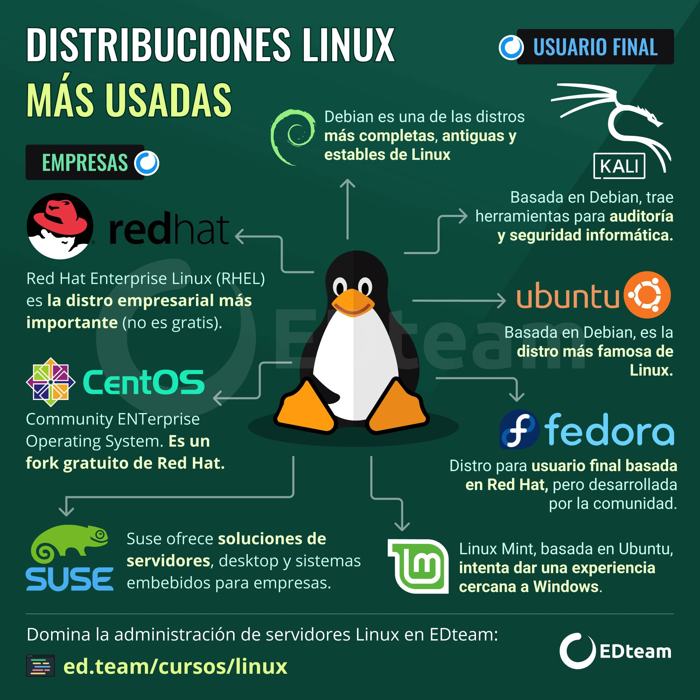
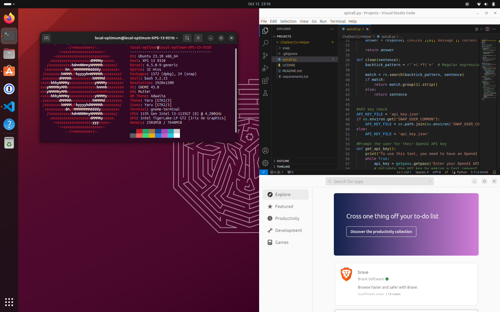
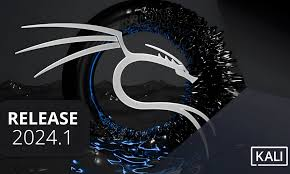
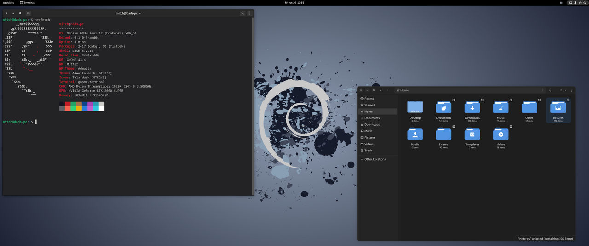
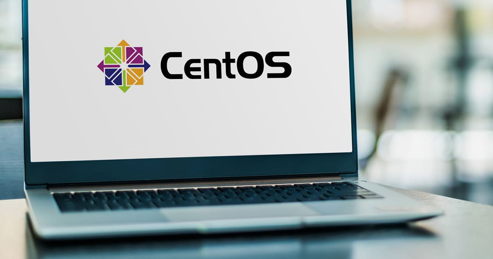

Biografia de Linux Torbal
Linus Benedict Torvalds (Helsinki, Finlandia, 28 de diciembre de 1969)es un ingeniero de software finlandés-estadounidense, conocido por iniciar y mantener el desarrollo del kernel (en español, núcleo) Linux, basándose en el sistema operativo libre Minix creado por Andrew S. Tanenbaum y en algunas herramientas, varias utilidades y los compiladores desarrollados por el proyecto GNU. Actualmente es responsable de la coordinación del proyecto. También ha desarrollado el software de control de versiones Git.
¿Qué es Linux?
Linux es un sistema operativo (SO) Open Source lo que hace referencia a Codigo Abierto. En 1991,
Linus Torvalds lo diseñó y
creó a modo de pasatiempo. Mientras estaba en la universidad. Tambien intentó crear una versión open source,
alternativa y
gratuita del sistema operativo MINIX, que a en los principios y el diseño de Unix. Ese pasatiempo logró
convertirse en el SO
con la mayor base de usuarios, su vez se basaba el más usado en los servidores de Internet disponibles
públicamente y en el único
utilizado en las 500 supercomputadoras más rápidas.
Distribuciones de el Sistema Operativo Linux más Usadas
- Fedora
- Linux Mint
- Suse
Ubuntu
Basada en Debian, Ubuntu es ampliamente utilizada y cuenta con ediciones oficiales para escritorio, servidor y núcleo. Es especialmente popular en proyectos de cloud computing.

Para ingresar a la pagina oficial oprime:Ubuntu
Kali Linux
Kali Linux es un sistema operativo que se utiliza principalmente para proteger y optimizar ordenadores y redes
al igual que
para descifrar contraseñas. Dado que estas características también pueden utilizarse con fines ilegales, la
distribución no
carece de polémica.

Para ingresar a la pagina oficial oprime:Kali Linux
Debia
El Proyecto Debian GNU/Linux es una asociación de personas que han hecho causa común para crear un sistema
operativo (SO) libre.
Este sistema operativo que hemos creado se llama Debian. Un sistema operativo es un conjunto de programas y
utilidades básicas
que hacen que su computadora funcione.

Para ingresar a la pagina oficial oprime:Debian
CentOS
CentOS Stream es una plataforma open source upstream que además de permitirle desarrollar y probar una
distribución que se ofrece
de forma permanente y que anticipa las actualizaciones que se incluirán en Red Hat Enterprise Linux, también
posibilita realizar
aportes al código.

Para ingresar a la pagina oficial oprime:CentOS
RedHat
Es un sistema operativo (SO) open source que permite ajustar las aplicaciones actuales e implementar
tecnologías nuevas en equipos
sin sistema operativo, entornos virtuales, de contenedores y de nube

Para ingresar a la pagina oficial oprime:RedHat